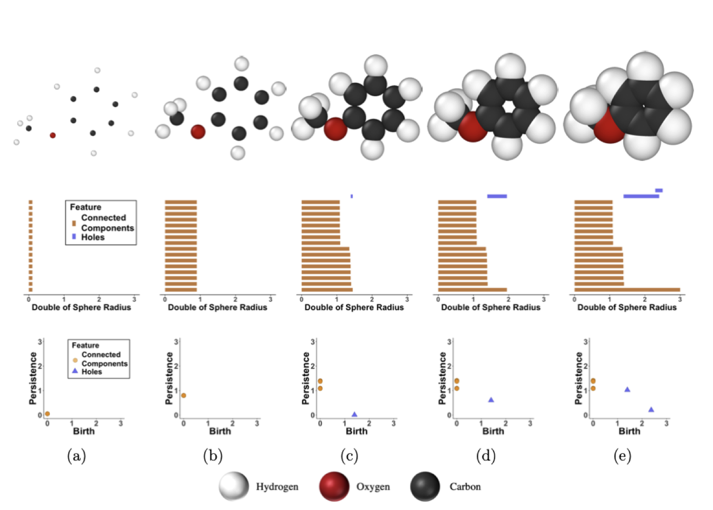

Persistent Images¶
In this tutorial, we present a method for molecular representation that utilizes persistence homology to summarize a molecule's homological parts into a stable, machine-readable vector. This chemical representation is called a persistence image, a tool of persistence homology.
What is Topological Data Analysis?¶
Topology is a branch of mathematics that analyzes the shape and important characteristics of an object. In topological data analysis (TDA), we apply these techniques to the shape and important characteristics of a data set. One such technique is persistent homology, which tracks the appearance and disappearance of homological features such as connected components and holes. These features appear in a topological descriptor called persistence diagrams(PD) containing the evolution of the connected components and holes from birth to death. A PD can then be converted to a finite-dimensional version of itself called a persistence image (PI). We outline the steps from data to PI in the next two sections.
Data to PD¶
We first produce a persistence diagram. In this case, we consider a chemical molecule represented in the xyz plane where each point represents an atom. We superimposed spheres of increasing radius centered at each atom. As these spheres incrementally increase, they begin to intersect with each other creating connected components and holes. Connected components and holes represent the interatomic distances as well as molecular attributes such as rings and groups respectively.
Figure 1 In the figure above we see the process by which a persistence diagram is generated for the molecule anisole. (a) The atoms of anisole are placed in the xyz plane (top) and each connected component is born at time birth=0 as represented by the vertical orange lines (middle), which has a corresponding PD (bottom). (b) As the radius of each sphere superimposed on each atom doubles, we see all connected components have persisted, which is represented by the lengthened orange lines (middle) and the heightened persistence of each point in the PD (bottom). (c) Again, the radii are increased; however, this time some radii intersect (top). This signifies the death of as many connected components as there are intersections, finalizing those points in the PD as well as the birth of a hole generated by 6 carbon atoms of the phenyl group represented by the blue line (middle) and blue triangle (bottom). (d) More connected components die as the increasing radii intersect while the hole still persists. (e) A second hole is created by the interaction between the methoxyl group and two carbons of the phenyl group (top). This hole as well as the previous hole die, leaving just one connected component (middle) that will never die as it has nothing left to intersect with. This last connected component is never represented in the PD.
PD to PI¶
Now that we have converted molecules to PDs, we look to create vectorized, machine-readable persistence images. We do this by placing a Gaussian kernel on each persistence point in the PD. This, along with a variable, weighing function, which gives us control over what persistence points we want to give more significance, creates a pixelized version of our PD. The multiplicity of each atom in our molecule is represented by the intensity of the pixels. This surface is then transferred to pixel values that encode the persistence surface. This method yields variability issues as it is possible for two molecules with the same geometries to yield the same PIs. To mitigate this, we describe the variance of the gaussian kernel with pairwise electronegativity differences of the atoms.

Figure 2 (a) We take the PD that we generated from Figure 1 and compute the PIs for its (b) connected components and (c) holes. Additionally, The PIs of (d) HBr and (e) F2 without incorporating the electronegativity differences are shown by (f) and (g) respectively. However, by factoring in the pairwise electronegativity differences for HBr in (h) and F2 in (i) we create distinctive PIs.
Generating Persistence Images¶
Obtaining data¶
First, you need to obtain data to use as input for the generation of the PI. This library includes some preloaded data in the babel folder, and we will use this data here as an example. This folder contains x, y, and z coordinates for different compounds. In this example, we will load in data for a pyridine molecule.:
from Element_PI import VariancePersist
chem_data = 'babel/1.xyz'
Setting Hyperparameters¶
Next, we’ll need to set the hyperparameters for our PI. The arguments and hyperparameters for
the PI-generating function, VariancePersist are described below:
pixelx,pixely:= numeric values
- These arguments correspond to the resolution of image
How dense do you want your grid on the PI to be?
This is equivalent to the size of your output vector
myspread:= numeric value
This argument specifies your variance for the Gaussian kernel
Higher
myspreadvalue accounts for more uncertainty in the PI
myspecs:= dictionary
- Form:
{"maxBD":<numeric value>, "minBD":<numeric value>}
The input for this argument must be specified in this form
showplot:= Boolean value
If you want to output the plot of your PI,
showplot = TrueIf you want output suppressed,
showplot = False
Running the Function¶
An example of generating a PI is shown below:
VariancePersist(Filename = 'babel/1.xyz', pixelx = 10, pixely = 10, myspread = 0.08, myspecs = {"maxBD":2.5, "minBD":0}, showplot = True)
Here is our output plot for this example: